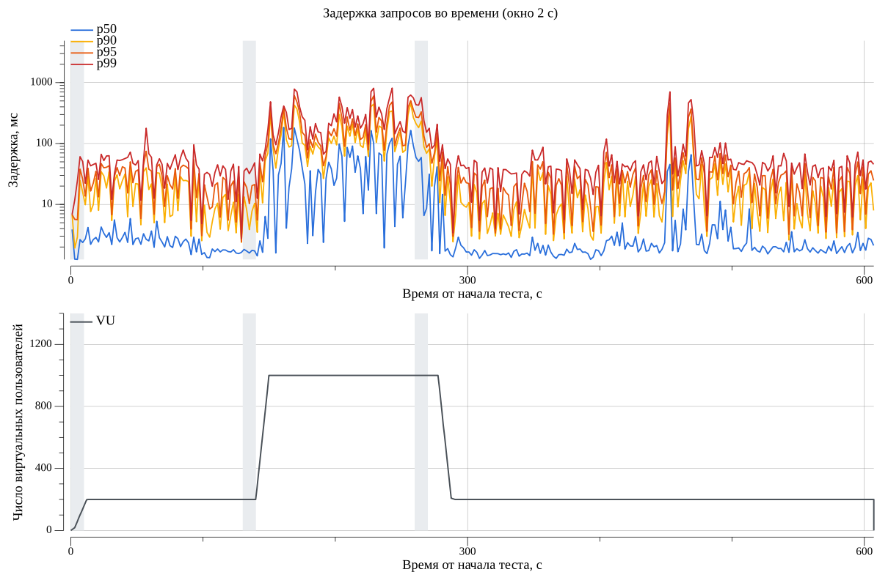
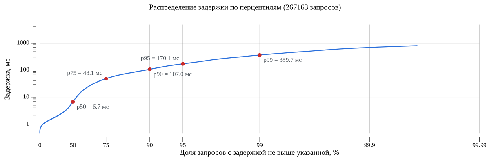
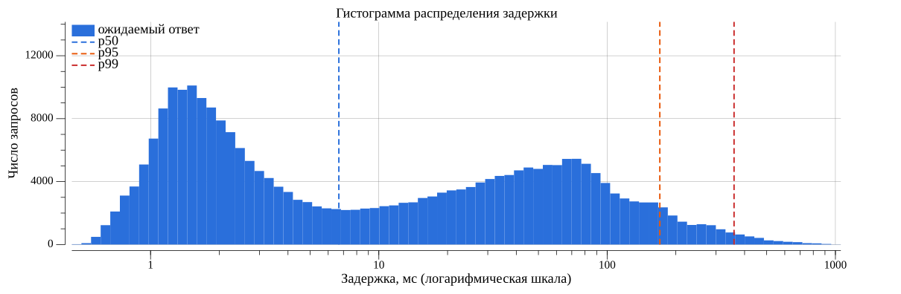
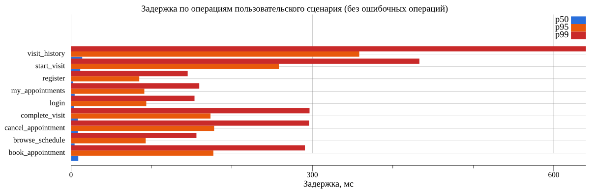
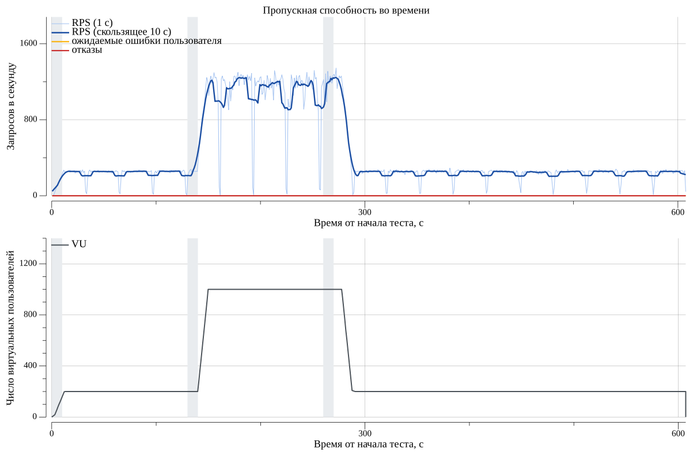
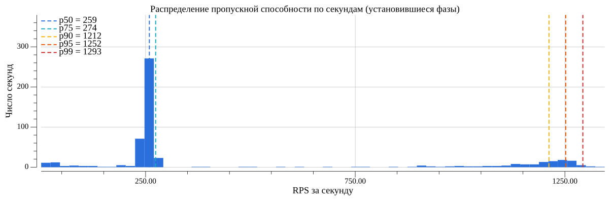
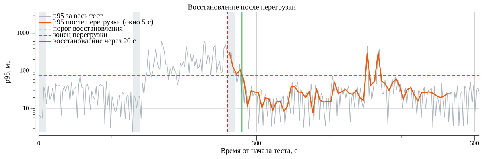
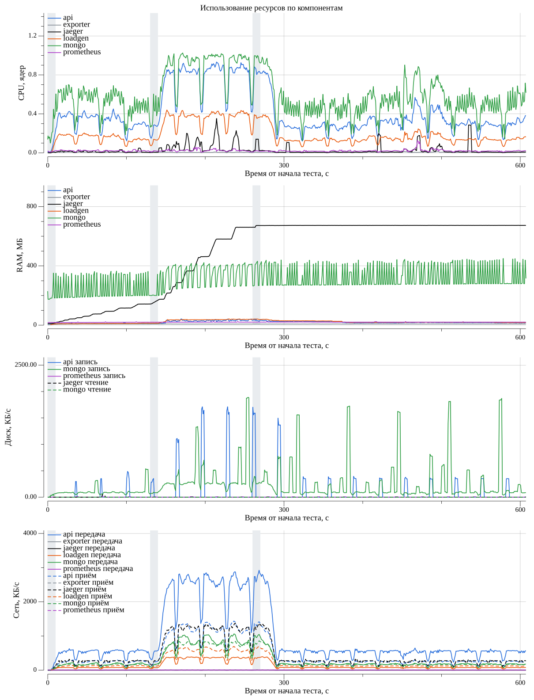

Перегрузка и восстановление
Запросов267163
RPS среднее / медиана439 / 258
p50 / p95 задержки6.68 / 170 мс
p99 задержки360 мс
Отказы0.00%
Ошибочные операции0.00%
Базовая нагрузка: p95 24.8 мс, 241 RPS. Перегрузка: p95 240 мс, отказы 0.0%, 1076 RPS. Восстановление после снятия перегрузки за 20.0 с.
Задержка
| Задержка, мс | count | min | mean | p50 | p75 | p90 | p95 | p99 | max |
|---|---|---|---|---|---|---|---|---|---|
| Все запросы | 267163 | 0.45 | 39.1 | 6.68 | 48.1 | 107 | 170 | 360 | 1046 |
| Корректные операции | 267163 | 0.45 | 39.1 | 6.68 | 48.1 | 107 | 170 | 360 | 1046 |
| Ошибочные операции | 0 | — | — | — | — | — | — | — | — |



Операции пользовательского сценария
| Операция | count | min | mean | p50 | p75 | p90 | p95 | p99 | max | Отказы | Ошибочные |
|---|---|---|---|---|---|---|---|---|---|---|---|
| book_appointment | 38759 | 0.85 | 40.7 | 9.03 | 57.5 | 116 | 177 | 291 | 1028 | 0.00% | 0.00% |
| browse_schedule | 38877 | 0.56 | 22.8 | 4.43 | 32.9 | 69.8 | 92.8 | 156 | 407 | 0.00% | 0.00% |
| cancel_appointment | 11571 | 0.73 | 41.1 | 8.72 | 57.9 | 117 | 178 | 296 | 562 | 0.00% | 0.00% |
| complete_visit | 26865 | 0.74 | 40.1 | 8.58 | 56.5 | 114 | 173 | 297 | 524 | 0.00% | 0.00% |
| login | 38992 | 0.45 | 22.3 | 3.83 | 32.3 | 69.0 | 93.6 | 154 | 434 | 0.00% | 0.00% |
| my_appointments | 38627 | 0.55 | 22.6 | 4.52 | 32.5 | 68.3 | 91.1 | 159 | 339 | 0.00% | 0.00% |
| register | 8218 | 0.52 | 19.8 | 2.49 | 27.8 | 65.2 | 84.8 | 145 | 728 | 0.00% | 0.00% |
| start_visit | 26947 | 0.97 | 58.0 | 11.5 | 78.9 | 173 | 258 | 433 | 620 | 0.00% | 0.00% |
| visit_history | 38307 | 0.77 | 77.4 | 14.0 | 95.7 | 233 | 358 | 640 | 1046 | 0.00% | 0.00% |

Пропускная способность
| Показатель | count | min | mean | p50 | p75 | p90 | p95 | p99 | max |
|---|---|---|---|---|---|---|---|---|---|
| RPS за секунду | 608 | 0.00 | 439 | 258 | 274 | 1211 | 1254 | 1295 | 1344 |


Фазы нагрузки
| Участок | VU | RPS ср. | RPS p50 | RPS p5 | p50 мс | p95 мс | p99 мс | Отказы | CPU api | CPU mongo | RAM api, МБ | SLO |
|---|---|---|---|---|---|---|---|---|---|---|---|---|
| разгон | 200 | 98.2 | 100 | 1.80 | 1.94 | 26.3 | 55.6 | 0.00% | 0.06 | 0.24 | 6.89 | да |
| базовая нагрузка | 200 | 240 | 256 | 36.8 | 2.20 | 31.2 | 53.9 | 0.00% | 0.33 | 0.52 | 10.9 | да |
| рост | 1000 | 255 | 256 | 231 | 1.72 | 20.2 | 38.5 | 0.00% | 0.24 | 0.40 | 10.9 | да |
| перегрузка | 1000 | 1076 | 1195 | 86.3 | 37.8 | 240 | 444 | 0.00% | 0.78 | 0.89 | 29.5 | да |
| спад | 200 | 1192 | 1238 | 980 | 35.7 | 233 | 422 | 0.00% | 0.79 | 0.91 | 33.1 | да |
| восстановление | 200 | 283 | 255 | 94.5 | 2.06 | 51.9 | 115 | 0.00% | 0.32 | 0.52 | 20.1 | да |
Перегрузка и восстановление
| Участок | VU | RPS ср. | RPS p50 | RPS p5 | p50 мс | p95 мс | p99 мс | Отказы | CPU api | CPU mongo | RAM api, МБ | SLO |
|---|---|---|---|---|---|---|---|---|---|---|---|---|
| эталон | 200 | 241 | 256 | 32.6 | 1.83 | 24.8 | 48.2 | 0.00% | 0.30 | 0.49 | 11.2 | да |
| перегрузка | 1000 | 1076 | 1195 | 86.3 | 37.8 | 240 | 444 | 0.00% | 0.78 | 0.89 | 29.5 | да |
| после | 200 | 241 | 255 | 113 | 2.06 | 33.6 | 58.7 | 0.00% | 0.32 | 0.53 | 17.6 | да |

Использование ресурсов
| Компонент | Метрика | min | max | mean | median | p95 |
|---|---|---|---|---|---|---|
| api | CPU, ядер | 0.01 | 0.93 | 0.41 | 0.32 | 0.87 |
| api | Троттлинг CPU, с/с | 0.00 | 0.18 | 0.01 | 0.00 | 0.07 |
| api | Чтение с диска, КБ/с | 0.00 | 0.00 | 0.00 | 0.00 | 0.00 |
| api | Запись на диск, КБ/с | 0.00 | 1711 | 76.6 | 0.00 | 357 |
| api | RAM (working set), МБ | 4.11 | 43.1 | 19.7 | 17.3 | 33.5 |
| api | Сеть, приём КБ/с | 0.20 | 1438 | 445 | 259 | 1328 |
| api | Сеть, передача КБ/с | 0.08 | 2921 | 958 | 567 | 2727 |
| api | Процессы и потоки | 7.00 | 16.0 | 9.26 | 9.00 | 10.0 |
| exporter | CPU, ядер | 0.00 | 0.02 | 0.01 | 0.01 | 0.01 |
| exporter | Троттлинг CPU, с/с | 0.00 | 0.00 | 0.00 | 0.00 | 0.00 |
| exporter | Чтение с диска, КБ/с | 0.00 | 0.00 | 0.00 | 0.00 | 0.00 |
| exporter | Запись на диск, КБ/с | 0.00 | 0.00 | 0.00 | 0.00 | 0.00 |
| exporter | RAM (working set), МБ | 3.40 | 8.26 | 7.68 | 7.79 | 8.08 |
| exporter | Сеть, приём КБ/с | 0.27 | 0.59 | 0.51 | 0.54 | 0.55 |
| exporter | Сеть, передача КБ/с | 1.97 | 4.83 | 4.30 | 4.62 | 4.63 |
| exporter | Процессы и потоки | 4.00 | 5.00 | 4.98 | 5.00 | 5.00 |
| jaeger | CPU, ядер | 0.00 | 0.35 | 0.03 | 0.01 | 0.14 |
| jaeger | Троттлинг CPU, с/с | 0.00 | 0.00 | 0.00 | 0.00 | 0.00 |
| jaeger | Чтение с диска, КБ/с | 0.00 | 47.2 | 0.26 | 0.00 | 0.00 |
| jaeger | Запись на диск, КБ/с | 0.00 | 0.00 | 0.00 | 0.00 | 0.00 |
| jaeger | RAM (working set), МБ | 10.9 | 674 | 494 | 673 | 674 |
| jaeger | Сеть, приём КБ/с | 0.03 | 1370 | 459 | 276 | 1283 |
| jaeger | Сеть, передача КБ/с | 0.00 | 2.95 | 1.08 | 0.75 | 2.71 |
| jaeger | Процессы и потоки | 8.00 | 8.00 | 8.00 | 8.00 | 8.00 |
| loadgen | CPU, ядер | 0.01 | 0.44 | 0.19 | 0.15 | 0.40 |
| loadgen | Троттлинг CPU, с/с | 0.00 | 0.00 | 0.00 | 0.00 | 0.00 |
| loadgen | Чтение с диска, КБ/с | 0.00 | 0.00 | 0.00 | 0.00 | 0.00 |
| loadgen | Запись на диск, КБ/с | 0.00 | 0.00 | 0.00 | 0.00 | 0.00 |
| loadgen | RAM (working set), МБ | 3.72 | 42.4 | 22.8 | 19.5 | 39.4 |
| loadgen | Сеть, приём КБ/с | 8.61 | 696 | 217 | 124 | 640 |
| loadgen | Сеть, передача КБ/с | 7.66 | 395 | 135 | 77.6 | 376 |
| loadgen | Процессы и потоки | 7.00 | 9.00 | 8.93 | 9.00 | 9.00 |
| mongo | CPU, ядер | 0.10 | 1.03 | 0.59 | 0.54 | 1.00 |
| mongo | Троттлинг CPU, с/с | 0.00 | 1.15 | 0.35 | 0.24 | 1.06 |
| mongo | Чтение с диска, КБ/с | 0.00 | 50.8 | 0.39 | 0.00 | 0.00 |
| mongo | Запись на диск, КБ/с | 0.99 | 1891 | 243 | 96.0 | 941 |
| mongo | RAM (working set), МБ | 175 | 450 | 308 | 278 | 434 |
| mongo | Сеть, приём КБ/с | 0.09 | 859 | 284 | 168 | 805 |
| mongo | Сеть, передача КБ/с | 0.03 | 1061 | 311 | 183 | 969 |
| mongo | Процессы и потоки | 39.0 | 153 | 123 | 137 | 150 |
| prometheus | CPU, ядер | 0.01 | 0.13 | 0.02 | 0.02 | 0.04 |
| prometheus | Троттлинг CPU, с/с | 0.00 | 0.00 | 0.00 | 0.00 | 0.00 |
| prometheus | Чтение с диска, КБ/с | 0.00 | 0.00 | 0.00 | 0.00 | 0.00 |
| prometheus | Запись на диск, КБ/с | 0.00 | 10.0 | 0.86 | 0.00 | 7.00 |
| prometheus | RAM (working set), МБ | 17.5 | 24.8 | 20.4 | 20.7 | 21.3 |
| prometheus | Сеть, приём КБ/с | 2.11 | 7.35 | 6.24 | 6.70 | 7.22 |
| prometheus | Сеть, передача КБ/с | 0.34 | 1.34 | 0.97 | 1.02 | 1.15 |
| prometheus | Процессы и потоки | 7.00 | 14.0 | 7.86 | 8.00 | 8.00 |

Коды ответов
| Код | Запросов |
|---|---|
| 200 | 193239 |
| 201 | 73924 |
Окружение прогона
| Компонент | Логические CPU | Квота CPU | Резерв RAM, МБ | Лимит RAM, МБ | Образ | ID образа |
|---|---|---|---|---|---|---|
| api | 0,1 | 1 | 512 | 512 | vitaline-lab6-api:20261115-205304-stress-gpyb | 579b68ac81b6 |
| exporter | 6,7 | — | 64 | 64 | vitaline-lab4-exporter:1 | 1d23c3f2327d |
| jaeger | 6,7 | — | 1536 | 1536 | jaegertracing/jaeger:2.11.0 | b585df1b6299 |
| loadgen | 4,5 | — | 2048 | 2048 | vitaline-lab4-loadgen:1 | 48e1046c6d0e |
| mongo | 2,3 | 1 | 1024 | 1024 | mongo:7 | 9896df581dfd |
| prometheus | 6,7 | — | 768 | 768 | prom/prometheus:v3.5.0 | 63805ebb8d2b |